Data Science for Electron Microscopy
Week 9: Unsupervised learning, autoencoders & latent spaces
FAU Erlangen-Nürnberg
Institute of Micro- and Nanostructure Research


Recap: Week 8 and today’s question
- Week 8: small data — physics-respecting augmentation, transfer learning, synthetic data & sim-to-real, active labelling, and self-supervised pre-training (SimCLR, MAE, DINO) evaluated with the linear-probe vs fine-tune protocol.
- Core insight: a network can learn useful features from a pretext task that needs no labels; labels are only needed for the small head on top.
- The remaining gap: what if we have 10 000 unlabelled EELS spectra or a 4D-STEM scan and no downstream label at all? We want structure — phases, anomalies, continuous order parameters — directly from the data.
- Today’s answer: unsupervised learning. Clustering (k-means, GMM/EM), compression (autoencoders), and probabilistic latent spaces (VAE, rVAE) — plus the discipline to read latent spaces without fooling ourselves.
- Concrete payoff: a denoising AE recovers low-dose spectra; a VAE gives a smooth, sampleable latent space; GMM on that latent recovers the four phases with BIC — and a t-SNE sweep shows what a 2-D map can and cannot tell you.
Learning outcomes
By the end of today you can:
- State the k-means objective and Lloyd’s algorithm; choose \(K\) with elbow/silhouette; name the failure modes on EM data.
- Write down the GMM, derive the E- and M-steps of EM, and choose \(K\) with BIC.
- Explain why an autoencoder generalises PCA (linear AE = PCA) and why denoising AEs work on low-dose spectra.
- Derive the ELBO, explain the reparameterisation trick and the closed-form Gaussian KL, and diagnose posterior collapse / inactive latent dimensions.
- Explain how an rVAE separates rotation/translation from content in atomic-resolution images.
- Read t-SNE/UMAP and latent maps critically: which claims survive a perplexity/seed sweep and which do not.
- Build a latent-space pipeline for EELS/4D-STEM: denoise → encode → cluster → map → validate.
Road map and self-study
- Road map: unsupervised landscape (3) · k-means (5) · GMM & the EM algorithm (6) · manifold hypothesis (3) · autoencoders & linear AE = PCA (7) · denoising AEs (4) · VAE: ELBO, reparameterisation, β, collapse (8) · rVAE for atomic-resolution images (3) · latent spaces: t-SNE/UMAP and how they mislead (7) · 4D-STEM/EELS latent maps & anomaly detection (6) · summary, must-knows, outlook to Week 10.
- Self-study:
notebooks/week09_autoencoder_vae.ipynb— denoising AE vs PCA on synthetic Fe-L₂₃ spectra, anomaly detection, then a VAE on the same spectra, GMM + BIC on its latent space, a t-SNE perplexity sweep, and a β-sweep exercise. CPU, ≈1 min. 
The unsupervised learning landscape
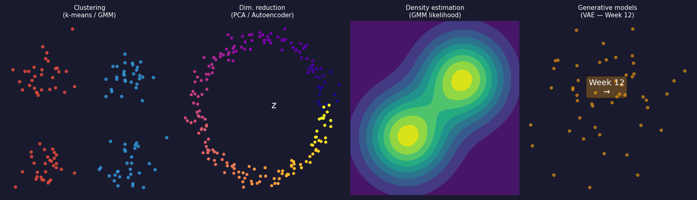
The four families of unsupervised learning. Clustering assigns each spectrum to a discrete group (k-means, GMM). Dimensionality reduction finds a low-dimensional coordinate that summarises each spectrum (PCA, autoencoder). Density estimation models the full probability distribution over spectra. Generative models sample new spectra from that distribution — the VAE later today; GANs and diffusion return in Week 13 as priors for inverse problems.
Why unsupervised matters for electron microscopy
- Most EM data arrives unlabelled. A 4D-STEM scan is hundreds of GB of diffraction patterns; an EELS map is millions of spectra. None of them come with a label until a human expert provides one.
- Clustering for exploration: before you can label, you need a hypothesis. Unsupervised clustering of spectra surfaces candidate phases for a domain expert to inspect.
- Compression for speed: a 1024-channel EELS spectrum can be compressed to 8 latent numbers without losing chemical content — enabling interactive visualisation of maps that would otherwise be too slow to display.
- Anomaly detection for quality control: spectra from contaminated regions, beam-damaged areas, or novel chemistry reconstruct poorly from an AE trained on normal data — flagged automatically, at zero annotation cost.
- The rule of thumb: if you have no labels at all, start with PCA to understand dimensionality, then an AE to capture non-linear structure Sandfeld, Stefan et al., (2024).
K-means: objective and Lloyd’s algorithm
Assign \(N\) spectra \(\{x_1, \ldots, x_N\} \subset \mathbb{R}^d\) to \(K\) groups \(C_1, \ldots, C_K\) by minimising:
\[ J = \sum_{k=1}^{K} \sum_{x_i \in C_k} \|x_i - \mu_k\|^2. \]
Lloyd’s algorithm — alternate two steps until assignments stop changing:
- Assign: each spectrum goes to its nearest centroid \(\mu_k\).
- Update: each centroid moves to the mean of its assigned spectra.
Each step strictly decreases \(J\); convergence in finitely many steps is guaranteed — to a local minimum.
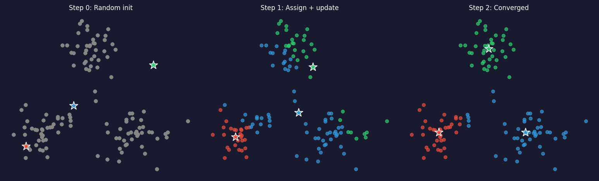
K-means: initialization and K-means++
- The problem: random initialization can place two centroids in the same cluster and miss another entirely. Different random starts give different final clusterings.
- K-means++ (standard default in scikit-learn) solves this:
- Pick the first centroid uniformly at random.
- Pick each subsequent centroid with probability proportional to \(D(x)^2\) — the squared distance to the nearest already-chosen centroid.
- This spreads the initial centroids, giving a provably better expected final \(J\).
- Practical recipe: use K-means++ plus 5–10 random restarts; keep the run with lowest \(J\).
- EM application: clustering latent codes (8-D AE output) rather than raw spectra (1024-D) makes K-means dramatically faster and more stable — the latent space is better conditioned Bruefach, Alexandra et al., (2023), doi:10.1063/5.0130546.
Choosing K: elbow method and silhouette score
Elbow method: - Run k-means for \(K = 1, 2, \ldots, K_{\max}\). - Plot \(J(K)\) vs \(K\). Look for the elbow: the point where \(J\) stops dropping fast. - Intuition: adding one more cluster beyond the true \(K\) gives diminishing returns.
Silhouette score: \[s(x_i) = \frac{b(x_i) - a(x_i)}{\max(a(x_i), b(x_i))}\] where \(a\) = mean intra-cluster distance, \(b\) = mean distance to nearest other cluster. Range: \([-1, 1]\), higher is better. Pick \(K\) that maximises mean silhouette.
Rule: use elbow and silhouette together. If they agree, more confidence.
- \(J(K)\) always decreases — at \(K = N\) every point is its own cluster and \(J = 0\).
- The elbow signals diminishing returns from extra clusters.
- Silhouette gives a per-point quality score: \(s > 0.5\) indicates good separation.
- Materials caveat: there is no objectively “correct” number of phases — the right \(K\) is the one a metallurgist or surface scientist can interpret. Use domain knowledge as a final sanity check.
K-means failure modes in EM data
- Spherical assumption: k-means uses Euclidean distance to a single centroid — implicitly assuming clusters are spherical and equal-sized. An elongated cluster (e.g., a phase with a peak that shifts continuously) is split incorrectly.
- Scale sensitivity: a single high-intensity spectral feature (zero-loss peak, characteristic X-ray line) dominates the Euclidean distance and swamps chemical differences. Fix: normalise each spectrum to unit peak or cluster latent codes.
- Outlier sensitivity: a single contaminated spectrum with extreme intensity pulls a centroid far from the true phase centre. Fix: remove outliers first (reconstruction-error threshold from the AE) or use K-medoids.
- No uncertainty: a spectrum on the boundary between two phases gets a hard label — but a human expert would call it “mixed.” GMM addresses this.
K-means in practice: the AE latent space is better to cluster
- Raw spectra (1024-D): Euclidean distance is dominated by the zero-loss peak and the absolute intensity level. Two spectra with the same chemistry but different sample thicknesses cluster differently — wrong.
- PCA scores (top-\(k\) components): variance-weighted projection. Better than raw, but linear. Minority phases with low total variance can be compressed into noise-floor components.
- AE latent codes (\(k\)-D): by definition, these \(k\) numbers are the most information-efficient representation the network found. They discard noise and capture chemical identity — the right things to cluster Peña, Francisco de la et al., (2019).
- Practical recipe for EM: (1) normalise each spectrum to unit peak intensity; (2) train denoising AE to \(k\)-D latent; (3) run k-means on latent codes; (4) visualise cluster centroids decoded back to spectrum space to verify chemical assignment.
- The rule: never cluster 1024-D raw spectra with k-means. Always reduce dimension first — PCA for a fast baseline, AE for the production pipeline.
GMM: soft clustering for overlapping phases
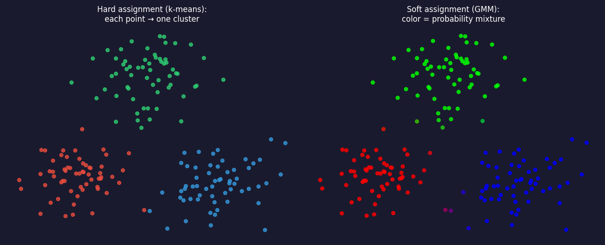
Hard vs soft assignment on the same spectral dataset. Left: k-means — each point belongs to exactly one phase (coloured circles). Right: GMM — each point carries a probability over phases; points near boundaries are shown as colour mixtures. This matters physically when EELS spectra from a transition zone contain contributions from both adjacent phases.
GMM: the model and the key intuition
A weighted sum of \(K\) Gaussian densities: \[ p(x) = \sum_{k=1}^{K} \pi_k \,\mathcal{N}(x;\,\mu_k,\,\Sigma_k), \quad \sum_k \pi_k = 1. \]
Intuition: each phase \(k\) is modelled as a Gaussian cloud of spectra centred on the phase-representative spectrum \(\mu_k\) with a covariance \(\Sigma_k\) encoding spectral variability.
Soft assignment (responsibility): \[\gamma_{ik} = P(\text{phase } k \mid x_i) \propto \pi_k\,\mathcal{N}(x_i;\,\mu_k,\Sigma_k).\]
- K-means vs GMM: same goal, different shape. K-means allows only spherical clusters; GMM allows ellipsoidal clusters of any orientation.
- EM payoff: an Fe₂O₃ phase may have higher variance along the Fe-L₂₃ edge than along the O-K edge. A full-covariance GMM captures this anisotropy; k-means cannot.
- Fitting: alternate between “which phase does this spectrum belong to?” (E-step) and “what is each phase’s average spectrum and spread?” (M-step) — the EM algorithm, next two slides Dempster, Arthur P. et al., (1977).
The latent-variable view and the EM algorithm
Hidden phase label \(c_i\in\{1,\dots,K\}\) for spectrum \(\mathbf{x}_i\): \(p(\mathbf{x}_i, c_i{=}k)=\pi_k\,\mathcal{N}(\mathbf{x}_i;\boldsymbol\mu_k,\Sigma_k)\). \(\log p(\mathbf{x}_i)=\log\sum_k(\cdot)\) has a sum inside the log → no closed form. EM alternates:
E-step (responsibilities, Bayes’ rule): \[ \gamma_{ik}=\frac{\pi_k\,\mathcal{N}(\mathbf{x}_i;\boldsymbol\mu_k,\Sigma_k)}{\sum_j \pi_j\,\mathcal{N}(\mathbf{x}_i;\boldsymbol\mu_j,\Sigma_j)} \]
M-step (weighted averages), with \(N_k=\sum_i\gamma_{ik}\): \[ \boldsymbol\mu_k=\tfrac{1}{N_k}\textstyle\sum_i\gamma_{ik}\mathbf{x}_i,\quad \Sigma_k=\tfrac{1}{N_k}\sum_i\gamma_{ik}(\mathbf{x}_i-\boldsymbol\mu_k)(\mathbf{x}_i-\boldsymbol\mu_k)^{\top},\quad \pi_k=\tfrac{N_k}{N} \]
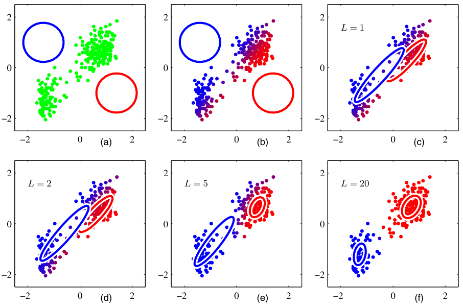
EM guarantees, initialisation, and choosing \(K\) with BIC
- Monotone: each EM iteration never decreases \(\sum_i\log p(\mathbf{x}_i;\theta)\) — EM maximises a lower bound that is tight after each E-step (the same bound as the VAE’s ELBO, with the exact posterior) Bishop, Christopher M., (2006).
- Local optima: like k-means, EM converges to a local maximum. Standard recipe: initialise with k-means, use several restarts (
n_init), keep the best likelihood. - Degeneracies: a component can collapse onto a single spectrum (\(\Sigma_k\to 0\), likelihood \(\to\infty\)). Fix: covariance regularisation (
reg_covar), diagonal covariances, or fitting in a low-dimensional latent space. - Choosing \(K\): because the GMM has a likelihood, use the Bayesian information criterion Schwarz, Gideon, (1978) \[\mathrm{BIC}(K)=-2\log p(\mathcal D;\hat\theta_K)+p_K\log N,\qquad p_K=(K-1)+Kd+K\tfrac{d(d+1)}{2}\ \text{(full }\Sigma).\]
- Notebook: GMM on the 2-D VAE latent of 400 spectra → BIC minimum at \(K=4\) (BIC 48 vs 371 at \(K=3\) and 75 at \(K=5\)), ARI = 1.00 with the simulated phases.
K-means vs GMM: comparison table
| K-means | GMM | |
|---|---|---|
| Assignment | hard (one cluster) | soft (probability vector) |
| Cluster shape | spherical | ellipsoidal (full \(\Sigma\)) |
| Speed | fast | slower (covariance update) |
| Boundary handling | abrupt | smooth |
| Choosing \(K\) | elbow + silhouette | BIC (penalised log-likelihood) |
| High-dim risk | Euclidean dominance | covariance explosion (\(d^2\) params) |
Rule of thumb: k-means for fast exploration; GMM when clusters overlap, vary in shape, or you need probabilities for downstream decisions. In both cases, prefer clustering latent codes over raw spectra Murphy, Kevin P., (2012).
The manifold hypothesis: why compression works
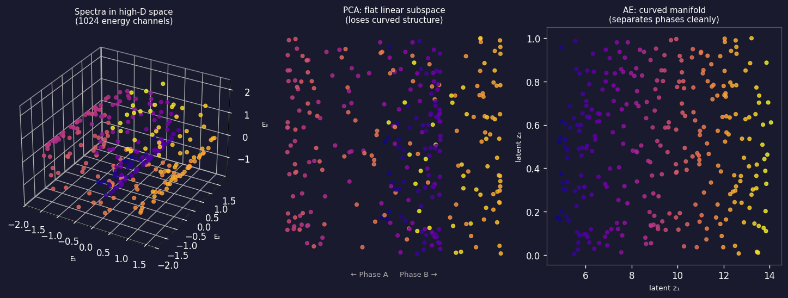
From high-dimensional spectra to a curved low-dimensional manifold. Left: three-dimensional view of data lying on a curved 2D surface embedded in 3D (analogy for 1024-D spectra on a ~10-D surface). Centre: PCA finds the best flat hyperplane — it unrolls the curve linearly and loses structure. Right: a nonlinear autoencoder follows the curved manifold, keeping phases separated along interpretable latent axes.
Why the manifold dimension matters for EM spectra
- Physical argument: a pure-phase EELS spectrum is determined by a small number of physical parameters — elemental identity, oxidation state, bonding geometry, thickness. For a two-phase system these might be five numbers. Yet we measure 1024 energy channels.
- Consequence: 1024 channels – 5 physical degrees of freedom = ~1019 dimensions of noise and redundancy.
- PCA captures this as: variance explained by the first 5 components >> variance in remaining components. The “scree plot elbow” (Week 3) is a direct signature of the manifold dimension.
- Autoencoder advantage: PCA’s subspace is flat; a real spectral manifold is curved — oxidation-state changes cause non-linear peak-position and intensity changes. A nonlinear AE can represent this curved surface with fewer latent dimensions than PCA needs Goodfellow, Ian et al., (2016).
- Rule: if the scree plot elbow is at \(k\), try a bottleneck of \(k\) to \(2k\) in the AE.
Autoencoder architecture: encoder–bottleneck–decoder
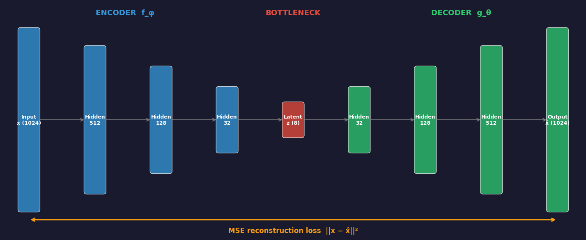
A deep autoencoder for spectral data. The encoder (blue, left) progressively compresses a 1024-channel spectrum to an 8-dimensional latent code z through successive hidden layers. The decoder (green, right) reconstructs the original 1024 channels from z. The bottleneck (red, centre) is the only constraint: it must retain enough information to reconstruct the input. The MSE reconstruction loss (orange, bottom) is the only supervisory signal — no labels needed.
Autoencoder: the reconstruction objective
The autoencoder minimises: \[ \mathcal{L}(\theta, \phi) = \frac{1}{N}\sum_{i=1}^{N} \bigl\|x_i - g_\theta(f_\phi(x_i))\bigr\|^2. \]
No labels — only the inputs themselves serve as targets. This is self-supervised: the supervisory signal is built into the data.
Minimising \(\mathcal{L}\) forces the bottleneck \(z = f_\phi(x)\) to retain enough information to reconstruct \(x\). This is the minimum description length principle: compress as much as possible while losing as little as possible.
In PyTorch (one line):
For Poisson-noisy EM spectra: consider Poisson negative-log-likelihood as the loss instead of MSE, because pixel variance grows with the signal Sandfeld, Stefan et al., (2024).
Autoencoder in PyTorch: spectral data
import torch
import torch.nn as nn
class SpectralAE(nn.Module):
def __init__(self, input_dim=128, latent_dim=8):
super().__init__()
self.encoder = nn.Sequential(
nn.Linear(input_dim, 64), nn.ReLU(),
nn.Linear(64, 32), nn.ReLU(),
nn.Linear(32, latent_dim) # bottleneck — no activation
)
self.decoder = nn.Sequential(
nn.Linear(latent_dim, 32), nn.ReLU(),
nn.Linear(32, 64), nn.ReLU(),
nn.Linear(64, input_dim) # output — no activation for spectra
)
def forward(self, x):
z = self.encoder(x)
x_hat = self.decoder(z)
return x_hat, z # return both for clustering
# Training loop (standard):
# loss = F.mse_loss(x_hat, x_clean) # denoising AE: target is clean!
# loss.backward(); optimizer.step()Choosing the bottleneck dimension \(k\)
- Too small ($k < $ intrinsic dim): the AE underfits — reconstruction error is high even on training data. Phases that differ only subtly get merged into a single latent cluster.
- Too large ($k > $ intrinsic dim): the AE overfits — extra latent dimensions encode noise rather than signal. Latent clusters spread out and silhouette score drops.
- Procedure: sweep \(k = 1, 2, \ldots, 2K_{\text{true}}\); plot validation reconstruction error vs \(k\) and look for the elbow. Cross-check with silhouette score — both should peak near the true intrinsic dimension.
- Sanity check: compare against PCA at the same \(k\). A nonlinear AE should reconstruct at least as well as PCA; if the AE underperforms PCA, it is either under-trained or the bottleneck is too narrow.
- Rule of thumb: start with $k = $ number of known phases. For an EELS map of an iron-oxide film with 3 known phases, try \(k = 3, 4, 5\); the notebook exercise demonstrates this sweep concretely.
Linear autoencoder = PCA
- Remove all nonlinear activations: \(f_\phi(x) = W_e x\), \(g_\theta(z) = W_d z\).
- Theorem Baldi, Pierre et al., (1989): with MSE loss, the optimal \((W_e, W_d)\) satisfy \(W_d W_e = U_k U_k^T\), where \(U_k\) contains the top-\(k\) left singular vectors of the centred data — exactly the PCA subspace.
- A linear autoencoder is PCA in disguise. Adding nonlinear activations (ReLU) is what breaks this equivalence and allows the AE to go beyond PCA.
- Implication for EM: if your EELS spectral manifold is approximately linear (Beer–Lambert mixing of pure-phase spectra), PCA and AE give similar results. If peak shapes shift non-linearly (oxidation-state changes, thickness effects, surface contamination), the nonlinear AE wins.
Linear AE vs nonlinear AE: the geometric picture
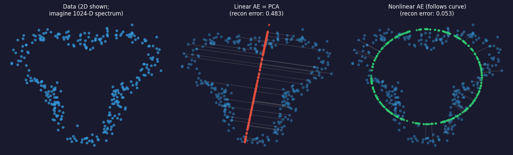
Left: data lying on a curved 2D line embedded in the plane. Centre: linear AE (= PCA) projects onto the best straight line — many points are far from the line (high reconstruction error, orange residuals). Right: nonlinear AE follows the curved surface — all points are close (low reconstruction error, green residuals). This is why a nonlinear AE outperforms PCA when the spectral manifold is curved.
The AE vs PCA comparison: what to measure
- Reconstruction error at \(k\) latent dimensions: compute \(\|x - \hat x\|^2\) on a held-out test set for both PCA (truncated SVD) and AE. Lower is better.
- Phase separability in the latent space: run k-means on the latent codes; measure silhouette score. Higher is better. If AE latent clusters are more separated than PCA scores, the AE has found a more useful representation.
- Denoising quality: for noisy EM data, compute SNR of the reconstructed spectrum vs the noisy input. If the AE was trained to denoise (next section), its reconstructed output should have significantly higher SNR.
- The honest comparison: always train PCA and AE on the same training set and evaluate on the same test set. Report both; do not cherry-pick the better one Sandfeld, Stefan et al., (2024).
Denoising autoencoders: the key idea
- Motivation: low-dose EELS and EDS are dominated by Poisson shot noise. At 50 electrons/channel, the SNR is \(\sqrt{50} \approx 7\) — the fine structure that distinguishes Fe²⁺ from Fe³⁺ is buried.
- The denoising AE Vincent, Pascal et al., (2008) trains on corrupted inputs and clean targets: \[\mathcal{L} = \frac{1}{N}\sum_i \|x_i - g_\theta(f_\phi(\tilde x_i))\|^2, \qquad \tilde x_i = x_i + \epsilon_i.\]
- Why it works: the encoder must find latent codes that capture robust features — peak positions, peak ratios — that survive the noise. Noise-specific features are useless for reconstruction, so they do not get encoded.
- EM training data: pairs of (noisy, clean) spectra. Clean spectra can be simulated from the known electron-scattering model; noisy spectra are generated by adding Poisson realisations.
Denoising AE: results on synthetic EELS spectra
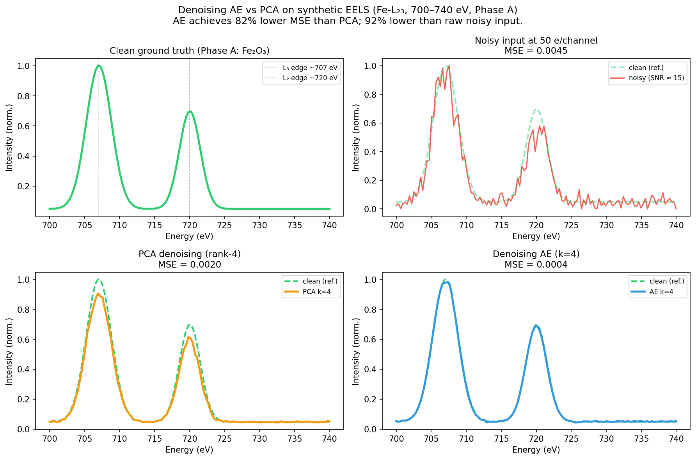
Denoising performance on synthetic low-dose EELS spectra near the Fe-L₂₃ edge (700–740 eV). Top-left: clean ground-truth spectrum (two Gaussian peaks: L₃ main edge ~707 eV and L₂ shoulder ~720 eV). Top-right: noisy input at 50 electrons/channel (Poisson noise). Bottom-left: PCA denoising (rank-4) — the MSE title shows the quantitative cost of linear approximation. Bottom-right: denoising AE (k=4) — achieves ≈81% lower MSE than PCA and ≈92% lower than the raw noisy input. Green dashed line is the clean reference in the bottom panels. PCA recovers the spectral shape but at ~5× higher reconstruction error; the AE captures the non-linear inter-phase variation and denoises with far less residual error.
Denoising AE in EM: practical considerations
- Noise model matters: for Poisson-dominated EELS, use Poisson NLL loss or pre-normalise spectra to roughly constant variance before MSE. A mismatch degrades denoising of low-count bins.
- Noise level during training: the noise level \(\sigma\) of \(\tilde x_i = x_i + \epsilon_i\) is a hyperparameter. Too low: the AE learns the identity and memorises noise. Too high: the AE cannot reconstruct even clean spectra.
- Beam-damage awareness: in a real experiment, “noisy” is also “beam-damaged” for longer exposures. The denoising AE must be trained on data with the same noise source as the test data. Mixing Poisson noise with Gaussian readout noise requires a Poisson+Gaussian model.
- When to prefer PCA denoising: if you have fewer than ~200 spectra, PCA is more robust. The AE needs enough data to learn the spectral manifold. Rule of thumb: AE wins for \(N > 500\) spectra; PCA wins for \(N < 200\).
The latent space: a learned coordinate system
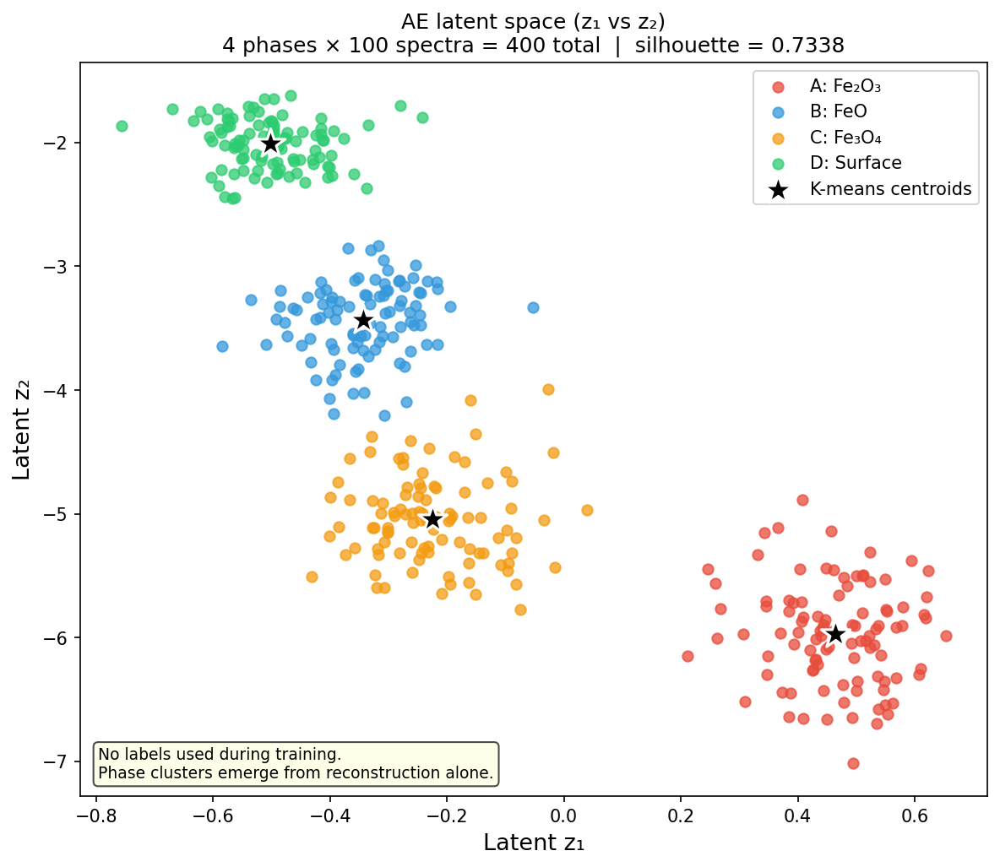
AE latent space (z₁ vs z₂) for 400 synthetic iron-oxide EELS spectra (4 phases, 100 spectra each: Fe₂O₃ red, FeO blue, Fe₃O₄ orange, Surface/amorphous green). The four phases cluster into well-separated islands without any labels — the only information the AE received was the raw spectra and the instruction to reconstruct them. Stars mark the k-means cluster centroids applied to the 4-D latent codes (silhouette ≈ 0.73). Only z₁ and z₂ are shown; all four latent dimensions contribute to the clustering.
t-SNE and UMAP: visualising high-dimensional latent codes
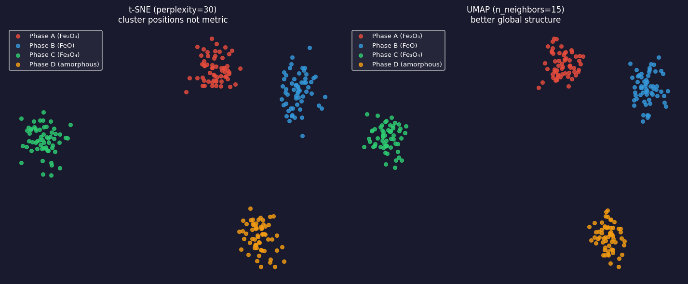
Left: t-SNE (perplexity=30) — 2D embedding of 240 latent codes from a 10-D AE. Four iron-oxide phases form islands. Warning: inter-island distances are not metric — the gap between Fe₂O₃ and FeO in this plot does not reflect their spectral similarity. Right: UMAP (n_neighbors=15) — same codes, tighter clusters, better preservation of global structure. Use UMAP for 2026 pipelines; t-SNE is a useful diagnostic.
Reading the latent space: what to look for
- Well-separated clusters: distinct phases with clean spectral signatures form non-overlapping islands. K-means on the 8-D latent codes (not the 2-D t-SNE!) produces a meaningful phase map.
- Overlapping clusters: genuine spectral mixtures (grain boundaries, transition zones) or insufficient bottleneck dimension. Increase \(k\) and check if clusters separate.
- Elongated clusters: a latent axis captures a continuous physical parameter (film thickness, oxidation-state gradient). This is useful — it lets you order spectra along a physical axis.
- Isolated outliers: spectra far from the main clusters are anomalies — contamination, beam damage, novel chemistry. High reconstruction error confirms they are genuinely anomalous, not just a poorly-initialised latent.
- Size is not meaningful in t-SNE: do not read cluster size as phase abundance. Use the actual fraction of data points per cluster for that.
Phase mapping from latent space: the EM pipeline
- Step 1 — Acquire: low-dose EELS map, shape \((N_y, N_x, E)\), reshape to \((N_y \cdot N_x, E)\).
- Step 2 — Pre-process: subtract background, normalise peak intensity, divide into train/test (by spatial region, not by pixel, to avoid leakage across neighbours).
- Step 3 — Train denoising AE: input = noisy spectrum; target = simulated clean spectrum. After training, the encoder is the feature extractor.
- Step 4 — Extract latent codes: \(z_i = f_\phi(x_i)\) for every pixel. Reshape back to \((N_y, N_x, k)\).
- Step 5 — Cluster latent codes: k-means or GMM on the \(k\)-D latent codes. Each cluster = one candidate phase.
- Step 6 — Validate: compare cluster centroids (decoded mean spectra) to reference spectra from databases or simulation. Adjust \(K\) if metallurgically implausible Ede, Jeffrey M., (2021), doi:10.1088/2632-2153/abd614.
Anomaly/novelty detection: reconstruction error as a score
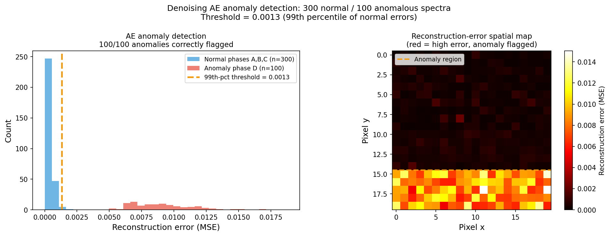
Left: reconstruction error distribution for 300 normal iron-oxide spectra (phases A, B, C; blue) and 100 anomalous spectra from Phase D (surface/amorphous; red). The AE was trained on normal spectra only. Anomalies reconstruct poorly — they lie outside the manifold the AE learned — with mean error ~25× higher than normal spectra. The 99th-percentile threshold ≈ 0.0013 (orange dashed line) flags all 100/100 anomalies correctly. Right: simulated reconstruction-error spatial map where the high-error region (bottom rows) marks anomalous Phase D pixels.
Case study: VAE for point-defect detection in STEM
- Prifti, Endrit et al. (2023), doi:10.1002/smll.202303024 trained a Convolutional Variational Autoencoder (CVAE) on STEM images of perfect crystal lattices — no defect images in the training set.
- At test time: defect-containing images (vacancies, anti-sites) reconstruct poorly — the CVAE has never seen these and cannot model them.
- Result: the reconstruction-error map flags point defects without a single labelled defect image. Detection accuracy comparable to human expert inspection.
- Why this is powerful for EM: defect labels are the most expensive annotation in all of materials science — identifying a point defect in an HAADF image requires: aberration-corrected TEM, careful tilt alignment, comparison to multislice simulation. A zero-label detector bypasses all of this.
Anomaly detection: the latent-outlier strategy
- Two complementary anomaly scores:
- Reconstruction error \(\|x - g_\theta(f_\phi(x))\|^2\): high → anomaly is outside the learned manifold.
- Latent-space Mahalanobis distance: compute the distribution of latent codes from normal data; flag test spectra with codes far from this distribution.
- The latent-outlier strategy is more robust when the anomaly is subtle: a beam-damaged spectrum may reconstruct adequately (the AE fills in plausible peaks) but land far from the normal cluster in the latent space.
- Combining both: use reconstruction error as the primary score; use latent distance as a secondary filter. A spectrum that is both poorly reconstructed and far from the latent cluster is a strong anomaly candidate.
- Threshold choice: the 99th-percentile rule is a starting point. Calibrate to the laboratory’s acceptable false-alarm rate.
From AE to VAE: the latent space has holes
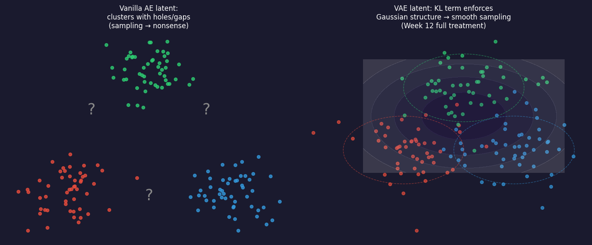
Left: vanilla AE latent space — clusters form but with gaps between them (question marks). Sampling from the gaps (grey arrows) decodes to nonsense because those regions were never seen during training. Right: VAE latent space — the KL term pulls every encoding distribution toward a standard Gaussian, so the space is filled and sampling anywhere gives a meaningful spectrum.
VAE: encoder outputs a distribution, prior on \(\mathbf{z}\)
Generative model (decoder): \(\ \mathbf{z}\sim p(\mathbf{z})=\mathcal{N}(\mathbf{0},I),\quad \mathbf{x}\sim p_\theta(\mathbf{x}\mid\mathbf{z})\)
Inference model (encoder): \(\ q_\phi(\mathbf{z}\mid\mathbf{x})=\mathcal{N}\big(\boldsymbol\mu_\phi(\mathbf{x}),\operatorname{diag}\boldsymbol\sigma^2_\phi(\mathbf{x})\big)\)
- AE: \(\mathbf{x}\to\mathbf{z}\to\hat{\mathbf{x}}\). VAE: \(\mathbf{x}\to(\boldsymbol\mu,\boldsymbol\sigma)\to\) sample \(\mathbf{z}\to\hat{\mathbf{x}}\).
- The encoder approximates the intractable posterior \(p_\theta(\mathbf{z}\mid\mathbf{x})\) — it inverts the decoder.
- Training pushes the aggregate posterior \(\mathbb{E}_{\mathbf{x}}[q_\phi(\mathbf{z}\mid\mathbf{x})]\) toward \(\mathcal{N}(\mathbf{0},I)\) → at test time, sample \(\mathbf{z}\sim\mathcal{N}(\mathbf{0},I)\) and decode Kingma, Diederik P. et al., (2014).
- Same idea as the GMM: a latent variable explains the data — but continuous, and with a neural-network likelihood.
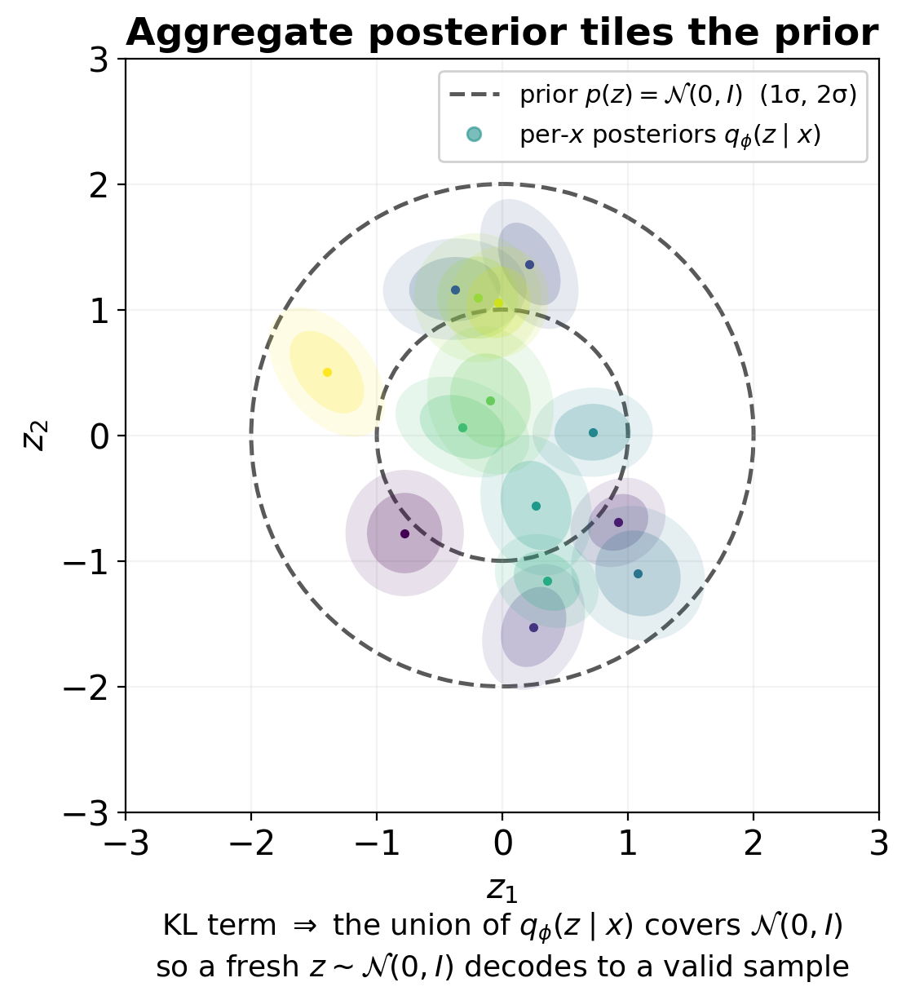
The ELBO: derivation in three moves
We want \(\log p_\theta(\mathbf{x})=\log\int p_\theta(\mathbf{x}\mid\mathbf{z})\,p(\mathbf{z})\,d\mathbf{z}\) — intractable for a neural decoder.
- Multiply and divide by \(q_\phi(\mathbf{z}\mid\mathbf{x})\); 2. Jensen (\(\log\) is concave); 3. factor \(p(\mathbf{x},\mathbf{z})=p(\mathbf{x}\mid\mathbf{z})p(\mathbf{z})\): \[ \log p_\theta(\mathbf{x})=\log\mathbb{E}_{q_\phi}\!\Big[\tfrac{p_\theta(\mathbf{x},\mathbf{z})}{q_\phi(\mathbf{z}\mid\mathbf{x})}\Big] \;\ge\;\underbrace{\mathbb{E}_{q_\phi(\mathbf{z}|\mathbf{x})}\big[\log p_\theta(\mathbf{x}\mid\mathbf{z})\big]}_{\text{reconstruction}}-\underbrace{\mathrm{KL}\big(q_\phi(\mathbf{z}\mid\mathbf{x})\,\|\,p(\mathbf{z})\big)}_{\text{prior matching}}=\mathrm{ELBO}. \]
- The gap is exactly \(\mathrm{KL}\big(q_\phi(\mathbf{z}\mid\mathbf{x})\,\|\,p_\theta(\mathbf{z}\mid\mathbf{x})\big)\ge 0\): a better encoder gives a tighter bound.
- Loss \(=-\mathrm{ELBO}\). For a Gaussian decoder with variance \(\sigma^2\): \(-\log p_\theta(\mathbf{x}\mid\mathbf{z})=\tfrac{1}{2\sigma^2}\|\mathbf{x}-\hat{\mathbf{x}}\|^2+\text{const}\) — the AE’s MSE (Week 2: noise model → loss). For Poisson counts, use the Poisson NLL instead.
The reparameterisation trick
- The ELBO contains \(\mathbb{E}_{q_\phi(\mathbf{z}|\mathbf{x})}[\cdot]\) — a distribution that depends on \(\phi\). We cannot back-propagate through
torch.randn. - Move the randomness off the parameter path: \[ \mathbf{z}=\boldsymbol\mu_\phi(\mathbf{x})+\boldsymbol\sigma_\phi(\mathbf{x})\odot\boldsymbol\epsilon,\qquad \boldsymbol\epsilon\sim\mathcal{N}(\mathbf{0},I). \]
- Now \(\nabla_\phi\,\mathbb{E}_{q_\phi}[f(\mathbf{z})]=\mathbb{E}_{\boldsymbol\epsilon}[\nabla_\phi f(\boldsymbol\mu+\boldsymbol\sigma\odot\boldsymbol\epsilon)]\) — an unbiased one-sample gradient estimate.
- Why it matters: it is what makes the VAE trainable with ordinary SGD/Adam — not “adding noise for robustness”.
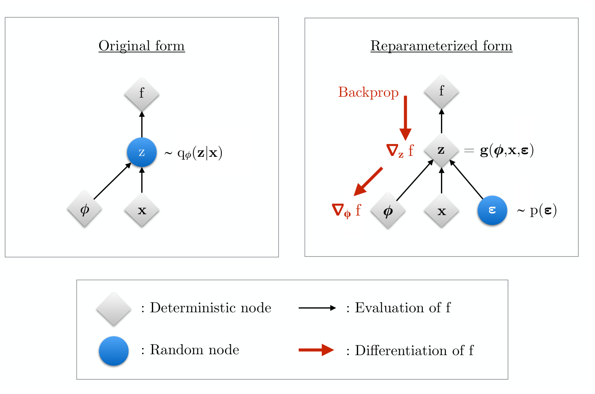
Closed-form KL and the 10-line training step
For \(q=\mathcal{N}(\boldsymbol\mu,\operatorname{diag}\boldsymbol\sigma^2)\) and \(p=\mathcal{N}(\mathbf{0},I)\): \[ \mathrm{KL}(q\,\|\,p)=\tfrac12\sum_{j=1}^{k}\big(\mu_j^2+\sigma_j^2-\log\sigma_j^2-1\big) \]
- \(\mu_j^2\): pulls means to 0.
- \(\sigma_j^2-\log\sigma_j^2-1\): convex bowl, minimum at \(\sigma_j=1\).
- No Monte Carlo needed for the KL — only the reconstruction term uses the sampled \(\mathbf{z}\).
mu, logvar = encoder(x_noisy) # predict log σ² → σ > 0 for free
eps = torch.randn_like(mu)
z = mu + torch.exp(0.5 * logvar) * eps # reparameterisation
x_hat = decoder(z)
recon = ((x_hat - x_clean)**2).sum(1) / (2 * SIGMA2)
kl = 0.5 * (mu**2 + logvar.exp() - logvar - 1).sum(1)
loss = (recon + beta * kl).mean() # = −ELBO (β = 1)
loss.backward(); opt.step()Denoising VAE as in the notebook: noisy input, clean target; KL warm-up \(\beta: 0\to1\) over 50 epochs.
β-VAE, posterior collapse and inactive dimensions
- β-VAE: \(\mathcal{L}=\text{recon}+\beta\,\mathrm{KL}\) Higgins, Irina et al., (2017). \(\beta>1\): smoother, more disentangled latent, blurrier reconstructions; \(\beta<1\): sharper, less sampleable.
- Posterior collapse: the encoder outputs \(\boldsymbol\mu\approx\mathbf{0},\boldsymbol\sigma\approx\mathbf{1}\) for every input (KL = 0) and the decoder ignores \(\mathbf{z}\).
- Per-dimension collapse is common and useful: unused dimensions switch off — the KL acts as an automatic bottleneck selector.
- Diagnostics: always log recon and KL separately; count active dims (\(\bar\sigma_j<0.5\)). Fixes: KL warm-up, smaller β, weaker decoder.
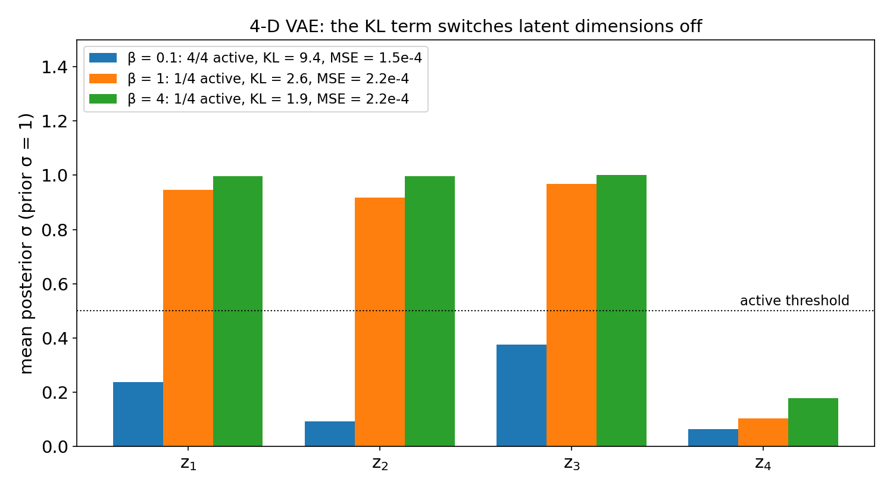
Notebook: a denoising VAE on the Fe-L₂₃ spectra
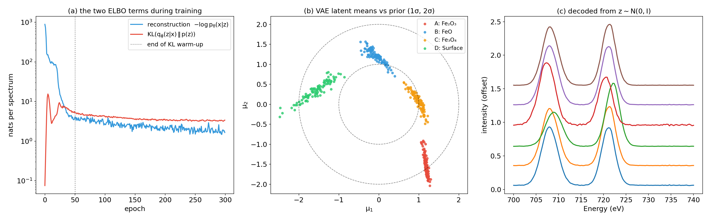
2-D denoising VAE, 400 spectra, SIGMA2 = 0.01, 300 epochs. (a) The two terms of the negative ELBO: the KL term rises during warm-up and settles at ≈3.4 nats per spectrum. (b) Latent means of the four phases sit inside the prior’s 2σ disc — no labels used. (c) Spectra decoded from \(\mathbf{z}\sim\mathcal{N}(0,I)\): plausible L₃/L₂ edges, including shapes between the phases.
Recon MSE (normalised): noisy input 0.00449 · PCA (\(k\)=4) 0.00205 · AE (\(k\)=4) 0.00038 · VAE (\(k\)=2) 0.00017 · k-means on VAE means: silhouette 0.77, ARI 1.00.
AE vs VAE: summary
| Vanilla AE | VAE | |
|---|---|---|
| Encoder output | a point \(\mathbf{z}\) | a distribution \(\mathcal{N}(\boldsymbol\mu,\operatorname{diag}\boldsymbol\sigma^2)\) |
| Loss | reconstruction | \(-\)ELBO = reconstruction + KL |
| Latent structure | arbitrary scale, holes | ≈ \(\mathcal{N}(\mathbf{0},I)\), space-filling |
| Sampling / interpolation | unreliable | \(\mathbf{z}\sim\mathcal{N}(\mathbf{0},I)\) → decode |
| Per-sample uncertainty | none | \(\boldsymbol\sigma_\phi(\mathbf{x})\) (approximate) |
| Typical EM use | denoising, compression, anomaly scores | smooth latent maps, disentangling (rVAE), generation |
Generative adversarial networks (GANs) — sharper samples, no encoder, no likelihood — return in Week 13 together with diffusion models as priors for inverse problems Goodfellow, Ian et al., (2014).
rVAE: separating rotation and translation from content
Problem: patches cropped around atoms in a STEM image differ by rotation and sub-pixel shift as much as by chemistry or structure. A plain VAE spends its latent dimensions on orientation.
Idea (spatial / rotationally invariant VAE) Bepler, Tristan et al., (2019); Kalinin, Sergei V et al., (2021):
- Latent split: \(\mathbf{z}=(\theta,\Delta\mathbf{r},\mathbf{z}_{\text{content}})\).
- The decoder is a function of pixel coordinates: \(\hat{I}(\mathbf{r})=g_\psi\big(R(\theta)\,\mathbf{r}+\Delta\mathbf{r},\ \mathbf{z}_{\text{content}}\big)\).
- Rotation and shift act on the coordinate grid by construction, so \(\mathbf{z}_{\text{content}}\) is forced to encode only what rotation/translation cannot explain.
- Priors: \(\theta\sim\mathcal{N}(0,s_\theta^2)\), \(\Delta\mathbf{r}\sim\mathcal{N}(0,s_r^2 I)\), \(\mathbf{z}_{\text{content}}\sim\mathcal{N}(\mathbf{0},I)\); ELBO as before.
Invariance is built into the architecture — the same “architecture as inductive bias” lesson as CNNs (Week 7) and GNNs (Week 10).
rVAE workflow for dynamic STEM data
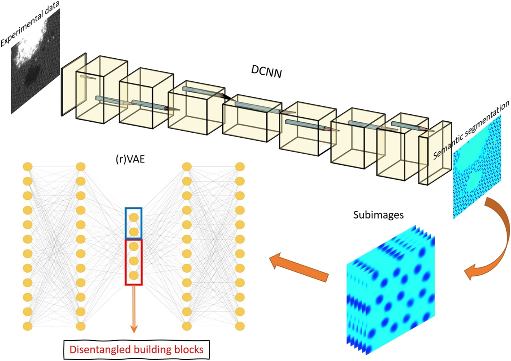
Workflow of Kalinin, Sergei V et al. (2021) for e-beam-driven dynamics in Si-doped graphene: a deep CNN semantically segments each STEM frame into atom types, sub-images are cropped around atomic positions, and an (r)VAE compresses them into disentangled building blocks (blue: rotation/shift latents; red: content latents). Reproduced from Kalinin et al., Sci. Adv. 7, eabd5084 (2021), open access.
GMM vs AE vs rVAE on the same atomic patches
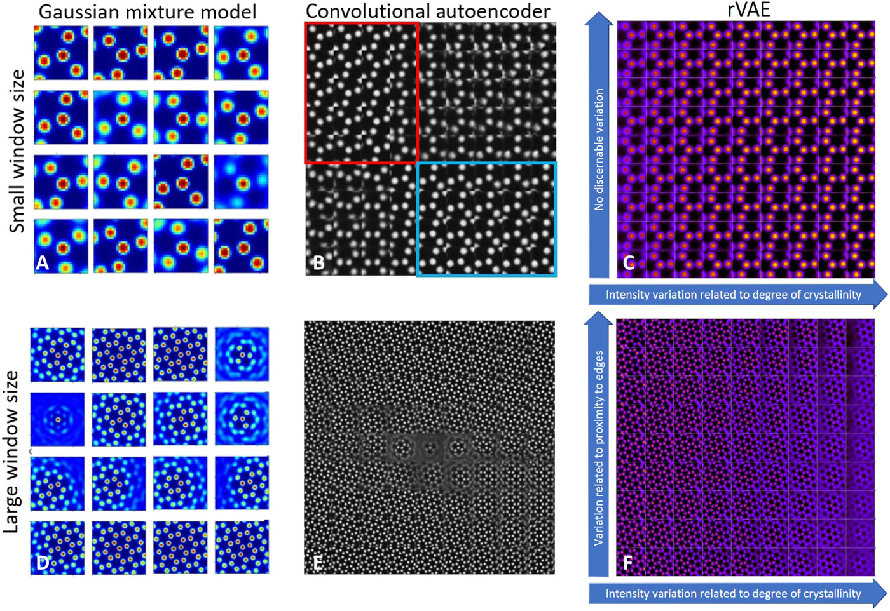
Descriptors for graphene sub-images with small (top) and large (bottom) windows. (A, D) GMM classes: many statistical components, rotation spread over several classes. (B, E) Convolutional AE latent grid: sublattices separate, but rotation, shift and defects are entangled. (C, F) rVAE latent grid: with rotation removed, only one latent direction varies (degree of crystallinity); with larger windows a second direction encodes proximity to edges. From Kalinin, Sergei V et al. (2021).
t-SNE perplexity sweep: same codes, four maps
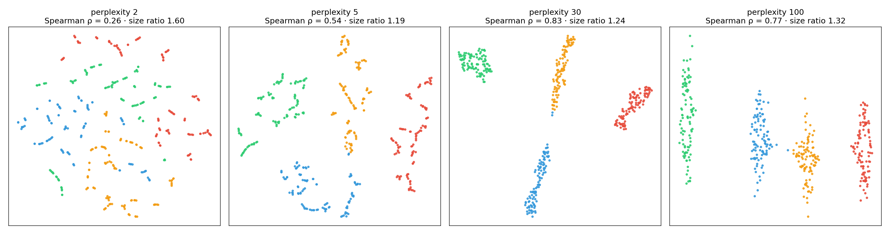
The same 400 four-dimensional AE latent codes (notebook Part 8) embedded with t-SNE at perplexity 2, 5, 30 and 100. ρ is the Spearman rank correlation between the six inter-phase centroid distances in the 4-D latent and in the 2-D map; size ratio is largest/smallest mean cluster radius (4-D latent: 1.75).
- Perplexity 2–5 shatters each phase into fragments (2-D silhouette 0.16 at perplexity 2) — “sub-phases” that do not exist.
- The ranking of inter-cluster distances changes with perplexity (ρ = 0.26 → 0.83) — never read distances off the plot Wattenberg, Martin et al., (2016), doi:10.23915/distill.00002.
- Cluster sizes are equalised (1.75 in \(\mathbf{z}\) vs 1.19–1.60 on the maps) — area is not abundance or variability.
How latent spaces mislead: five traps
- Distance trap: “cluster A is closer to B than to C” on a t-SNE/UMAP map is not a physics claim. Compute distances in \(\mathbf{z}\) (or better, in spectrum space).
- Size/density trap: t-SNE equalises densities; cluster area says nothing about phase fraction or heterogeneity. Count points in \(\mathbf{z}\)-space clusters.
- Narrative fallacy: three blobs will be told as a three-phase story. Humans see clusters even in UMAP of random Gaussian noise. Replicate across method, seed, hyperparameters, encoder.
- “Axis means X” trap: \(z_1\) correlating with thickness does not mean \(z_1\) encodes thickness — both may track a third variable. Demand a linear probe with a control (Week 8) and decode a sweep along the axis.
- Corpus/nuisance trap: the latent inherits what varies most in the training data — thickness, drift, dose, detector gain — not necessarily the chemistry you care about.
Confident is not correct: the interface trap
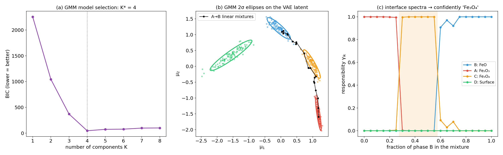
Notebook Part 7. (a) BIC selects K = 4 on the 2-D VAE latent. (b) GMM 2σ ellipses and the latent path of synthetic A/B interface spectra \((1-f)\,\mathbf{x}_{\text{Fe}_2\text{O}_3}+f\,\mathbf{x}_{\text{FeO}}\). (c) Responsibilities along the path: for \(0.30\le f\le 0.55\) the mixtures are assigned to Fe₃O₄ with \(\gamma\approx 1.00\).
A 50/50 Fe₂O₃/FeO interface pixel is labelled “Fe₃O₄” with responsibility 1.00. A responsibility is a probability under the fitted mixture, not a probability that the chemistry is right. Check against spatial context, reference spectra, and linear unmixing (Week 3).
A checklist for latent-space claims
- State the pipeline: preprocessing (normalisation, background, VST), architecture, latent dim, β / decoder variance, training data.
- Baseline: PCA/NMF at the same dimension (Week 3). If the AE/VAE does not beat it, the nonlinear model buys nothing.
- Cluster in \(\mathbf{z}\), visualise in 2-D: k-means/GMM on the latent codes, never on t-SNE coordinates.
- Sweep: perplexity / n_neighbors × ≥3 seeds; report which structures survive.
- Decode: show decoded spectra/patterns along each claimed axis and at each cluster centre.
- Probe: linear probe with held-out specimen/session split (Week 4 honest validation) before calling an axis “thickness” or “strain”.
- Map back to real space: a phase that has no sensible spatial distribution is suspicious.
Latent maps: every scan position gets a latent vector
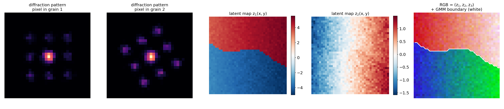
Synthetic 4D-STEM scan (40×40 probe positions, 32×32 px diffraction patterns, Poisson noise): two grains with 28° relative rotation, a slight continuous bending, and a left-to-right thickness gradient. Patterns are square-root transformed (Week 2 VST), compressed to three latent coordinates (PCA as stand-in for the encoder), and each coordinate is shown as a map. \(z_1\) separates the grains; \(z_2\) follows the thickness gradient — a nuisance variable, not structure. A 2-component GMM on \((z_1,z_2,z_3)\) recovers the grain boundary (white).
4D-STEM and EELS latent maps in practice
- 4D-STEM: \((N_y,N_x,Q_y,Q_x)\to\) reshape to \(N_yN_x\) patterns of \(Q_yQ_x\) pixels → encoder → latent maps \((N_y,N_x,k)\). Clusters = orientations/phases; continuous axes = strain, tilt, thickness. PCA/NMF + clustering is the robust baseline Bruefach, Alexandra et al., (2023), doi:10.1063/5.0130546.
- rVAE on 4D-STEM or atom patches: \(\theta\)-map = local orientation/rotation field; \(\mathbf{z}_{\text{content}}\)-map = structure after removing orientation Kalinin, Sergei V et al., (2021).
- EELS/EDS spectrum images: Poisson-aware preprocessing (Week 3) → denoising AE/VAE → latent maps → GMM phase map with per-pixel responsibility (uncertainty map for free).
- Honest splits: train and validate on different regions/specimens — neighbouring pixels are strongly correlated (Week 4).
- Validate each latent map against a physical observable: a reference spectrum fit, a virtual-detector image, a simulated diffraction pattern.
Putting it all together: the unsupervised EM pipeline
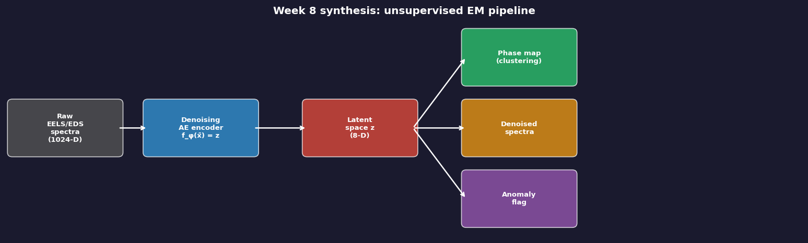
Complete pipeline from raw EELS/EDS spectra to actionable outputs. Raw spectra enter a denoising AE/VAE encoder; the latent space \(z\) branches into (1) a phase map via k-means/GMM, (2) denoised spectra via the decoder, and (3) anomaly flags where reconstruction error exceeds a threshold. All three outputs require zero labels — and all three need the validation checklist before they become claims.
Notebook summary: Week 9 key results
- Data: 400 synthetic Fe-L₂₃ spectra, 4 phases, Poisson (50 e⁻/channel) + Gaussian noise, SEED = 42.
- Denoising AE vs PCA (\(k\)=4): MSE 0.00038 vs 0.00205 (noisy input 0.00449) — AE 81.6% better than PCA; latent silhouette 0.73 vs 0.63.
- Anomaly detection: phase D unseen in training → mean reconstruction error 25× higher; 100/100 flagged at the 99th-percentile threshold.
- VAE (2-D, SIGMA2 = 0.01): MSE 0.00017, KL ≈ 3.4 nats/spectrum; k-means on latent means: silhouette 0.77, ARI 1.00; prior samples decode to plausible spectra.
- GMM on the VAE latent: BIC minimum at \(K\) = 4 (ARI 1.00) — but 50/50 A/B interface spectra are assigned to Fe₃O₄ with \(\gamma\) = 1.00.
- t-SNE sweep: inter-cluster distance rank correlation ρ = 0.26 / 0.54 / 0.83 / 0.77 at perplexity 2 / 5 / 30 / 100; perplexity 2 shatters the phases.
- Exercise B (β-sweep, 4-D VAE): active dims 4 → 1 → 1 for β = 0.1 → 1 → 4; KL 9.4 → 2.6 → 1.9 nats.
Summary
- Clustering: k-means = coordinate descent on within-cluster variance (hard, spherical). GMM + EM = soft, ellipsoidal, with a likelihood → BIC for \(K\). k-means is the hard-assignment limit of EM.
- Autoencoders: a bottleneck forces a compact code; linear AE = PCA; nonlinear AEs follow curved manifolds; denoising AEs learn noise-robust features.
- VAE: encoder outputs \(q_\phi(\mathbf{z}\mid\mathbf{x})\); loss = −ELBO = reconstruction (noise-model NLL) + KL to \(\mathcal{N}(0,I)\); trainable thanks to reparameterisation; β controls the trade-off and switches dimensions off.
- rVAE: rotation and translation built into a coordinate-based decoder → content latents free of orientation; ideal for atomic-resolution patches and 4D-STEM.
- Latent spaces mislead unless you cluster in \(\mathbf{z}\), sweep hyperparameters, decode axes, probe with honest splits, and map back to real space.
Must-know takeaways
- k-means minimises \(\sum_k\sum_{i\in C_k}\|\mathbf{x}_i-\boldsymbol\mu_k\|^2\) by alternating assign/update; converges to a local minimum → k-means++ and restarts.
- GMM responsibilities \(\gamma_{ik}\propto\pi_k\mathcal{N}(\mathbf{x}_i;\boldsymbol\mu_k,\Sigma_k)\) (E-step); M-step = responsibility-weighted means, covariances, fractions; choose \(K\) by BIC.
- A linear AE with MSE loss spans the PCA subspace; nonlinearity is what goes beyond PCA.
- \(\log p(\mathbf{x})\ge\mathbb{E}_q[\log p(\mathbf{x}\mid\mathbf{z})]-\mathrm{KL}(q(\mathbf{z}\mid\mathbf{x})\|p(\mathbf{z}))\); the gap is the KL to the true posterior.
- Reparameterisation \(\mathbf{z}=\boldsymbol\mu+\boldsymbol\sigma\odot\boldsymbol\epsilon\) makes sampling differentiable.
- t-SNE/UMAP: clusters that survive a sweep are evidence; positions, gaps and sizes are not.
Outlook: Week 10 — Attention, transformers & graph networks for EM
- Today’s architectures treated a spectrum or patch as a flat vector (MLP) or a grid (CNN). The rVAE hinted at something more: where things are and how they relate matters.
- Week 10: attention — queries, keys, values; every token looks at every other token. Vision transformers cut images and diffraction patterns into tokens; masked autoencoders (MAE) are autoencoders with a transformer encoder.
- Graphs: atom columns as nodes, neighbours as edges, message passing with built-in permutation invariance — the natural home for the atom-centred patches the rVAE used.
- The unifying picture: CNN = grid graph, GNN = sparse graph, transformer = fully connected graph — architecture as inductive bias.
- Explainability thread: attention maps look like explanations — why attention ≠ explanation, just as a latent axis ≠ a physical variable.
Continue
References

©Philipp Pelz - FAU Erlangen-Nürnberg - Data Science for Electron Microscopy